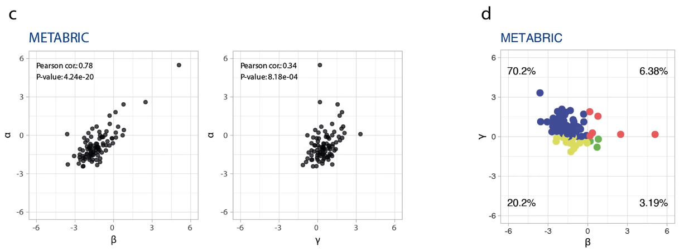

Introduction
PIK3CA is a frequently mutated oncogene in human cancers, with mutations found in various cancer types, including endometrial, ovarian, colorectal, breast, cervical, squamous cell cancer of the head and neck, chondroma, and thyroid carcinoma1. The PIK3CA gene encodes the p110α catalytic subunit of phosphatidylinositol 3-kinase2.
Somatic missense mutations in PIK3CA have been reported in many human cancer types, and are predominantly found in the kinase and helical domains of the PIK3CA subunit3.
According to karakas_2006 at al, some of the most common PIK3CA mutations associated with cancer include:
- Exon 9 (G1624A:E542K)
- Exon 20 (A3140G:H1047R)
- Exon 1 (E545K)
PIK3CA mutations are more common in tumors with mutant PTEN genes than in tumors with wild-type PTEN genes4. The discovery of oncogenic mutations in PIK3CA has emphasized the important role of PI3K in cancer pathogenesis and made it possible to quickly and easily identify tumors with activation of PI3K signaling by virtue of mutations in PIK3CA4.
In this vignette we use agvgd to classify the pathogenecity of the missence mutations/variations reported in Correia and Magno et al (2022)5. Here they report several mutations found in breast cancer, from which we selected the 17 variants found in the metabric dataset. These will be used to showcase how the usage of the agvgd package can complement the findings from other biomedical data analyses.

Running agvgd
Data sets
To use the agvgd package to predict the protein impact of the metabric variants reported in Correia and Magno et al5, we need two data sets:
- The list of the 17 metabric PIK3CA missense variants;
- The protein sequence alignment of PIK3CA.
These first dataset is readily available with the agvgd package, and the protein alignment is provide within the companion package protean. More information regarding the protean package can be found in its GitHub repository.
1. Get the alignment dataset from {protean}
To retrieve the alignment of PIK3CA from the protean
package, we will use the functions read_profile() and
profile_path() using the gene name
"PIK3CA":
# Load the required packages
library(protean)
library(dplyr)
# Using protean
# Check all oncoKB proteins that have alignment files in the protean package
head(protean::oncokb_genes)
#> [1] "ABL1" "AKT1" "ALK" "AMER1" "APC" "AR"
# Confirm that PIK3CA is present
grep("PIK3CA", protean::oncokb_genes, value = TRUE)
#> [1] "PIK3CA"
# Get the alignment profile information for PIK3CA
pik3ca_profile <- protean::read_profile(protean::profile_path("PIK3CA"))
head(pik3ca_profile)
#> # A tibble: 6 × 11
#> timestamp human_prot_id ortho_prot_id ortho_species human_align_seq
#> <chr> <chr> <chr> <chr> <chr>
#> 1 2023-11-26 21:55:44… ENSP00000263… ENSGGOP00000… gorilla_gori… MPPRPSSGELWGIH…
#> 2 2023-11-26 21:55:44… ENSP00000263… ENSMFAP00000… macaca_fasci… MPPRPSSGELWGIH…
#> 3 2023-11-26 21:55:44… ENSP00000263… ENSMMUP00000… macaca_mulat… MPPRPSSGELWGIH…
#> 4 2023-11-26 21:55:44… ENSP00000263… ENSMNEP00000… macaca_nemes… MPPRPSSGELWGIH…
#> 5 2023-11-26 21:55:44… ENSP00000263… ENSPANP00000… papio_anubis MPPRPSSGELWGIH…
#> 6 2023-11-26 21:55:44… ENSP00000263… ENSMLEP00000… mandrillus_l… MPPRPSSGELWGIH…
#> # ℹ 6 more variables: ortho_align_seq <chr>, human_ortho_perc_id <dbl>,
#> # ortho_human_perc_id <dbl>, cigar <chr>, human_profile_seq <chr>,
#> # ortho_profile_seq <chr>2. Format the sequence profile to an alignment with
{agvgd}
Next, the sequence profile must be converted to an alignment format.
For this we must use the profile_to_alignment() function
from the agvgd package.
# Using agvgd
# Convert the protean sequence profile to an alignment
pik3ca_alignment <- agvgd::profile_to_alignment(pik3ca_profile)
# Check the first lines and columns of the alignment
pik3ca_alignment[1:15, 1:30]
#> homo_sapiens_ENSP00000263967 1 MPPRPSSGELWGIHLMPPRILVECLLPNGM
#> gorilla_gorilla_ENSGGOP00000009158 1 MPPRPSSGELWGIHLMPPRILVECLLPNGM
#> macaca_fascicularis_ENSMFAP00000027509 1 MPPRPSSGELWGIHLMPPRILVECLLPNGM
#> macaca_mulatta_ENSMMUP00000006866 1 MPPRPSSGELWGIHLMPPRILVECLLPNGM
#> macaca_nemestrina_ENSMNEP00000020318 1 MPPRPSSGELWGIHLMPPRILVECLLPNGM
#> papio_anubis_ENSPANP00000023010 1 MPPRPSSGELWGIHLMPPRILVECLLPNGM
#> mandrillus_leucophaeus_ENSMLEP00000019594 1 MPPRPSSGELWGIHLMPPRILVECLLPNGM
#> chlorocebus_sabaeus_ENSCSAP00000009123 1 MPPRPSSGELWGIHLMPPRILVECLLPNGM
#> pongo_abelii_ENSPPYP00000041486 1 MPPRPSSGELWGIHLMPPRILVECLLPNGM
#> rhinopithecus_roxellana_ENSRROP00000011898 1 MPPRPSSGELWGIHLMPPRILVECLLPNGM
#> equus_asinus_ENSEASP00005039543 1 MPPRPSSGELWGIHLMPPRILVECLLPNGM
#> capra_hircus_ENSCHIP00000015546 1 MPPRPSSGELWGIHLMPPRILVECLLPNGM
#> panthera_leo_ENSPLOP00000019775 1 MPPRPSSGELWGIHLMPPRILVECLLPNGM
#> ailuropoda_melanoleuca_ENSAMEP00000011350 1 MPPRPSSGELWGIHLMPPRILVECLLPNGM
#> bos_indicus_hybrid_ENSBIXP00005013124 1 MPPRPSSGELWGIHLMPPRILVECLLPNGM3. Read the file with substitutions of interest
The substitutions file should have one substitution per line, and the substitutions should be formatted in the following way:
H1047Y where H (Histidine) is the original aminoacid, 1047 is the protein position for this aminoacid, and Y (Tyrosine) is the new aminoacid originated by the missence mutation.
To read in the 17 PIK3CA missense variants, we use the function
read_substitutions() from the agvgd
package:
# Read the variants file
path <- system.file("extdata/correia_magno2022.txt", package = 'agvgd', mustWork = TRUE)
missense_variants <- agvgd::read_substitutions(path)
missense_variants
#> # A tibble: 17 × 4
#> res poi ref sub
#> <int> <int> <chr> <chr>
#> 1 88 NA R Q
#> 2 111 NA K E
#> 3 345 NA N K
#> 4 385 NA E K
#> 5 420 NA C R
#> 6 453 NA E K
#> 7 542 NA E K
#> 8 545 NA E A
#> 9 545 NA E K
#> 10 546 NA Q R
#> 11 726 NA E K
#> 12 909 NA F L
#> 13 1021 NA Y H
#> 14 1043 NA M V
#> 15 1047 NA H L
#> 16 1047 NA H R
#> 17 1047 NA H YThe list of missense variants comes with the indication of the
residue number in the protein sequence, i.e. column res in
missense_variants. As we’ll see next, the function
agvgd() uses the alignment positions (column
poi in missense_variants) instead to refer to
those positions in the alignment.
The difference between res and poi
(position of interest) is that res counts the residues in
the protein primary sequence reference, while poi refers to
the positions in the alignment, accounting for gaps.
So, before we proceed, we will update the
missense_variants tibble and replace the NA
values with the corresponding poi values. For that we use
the function res_to_poi() from agvgd:
missense_variants$poi <- agvgd::res_to_poi(pik3ca_alignment, missense_variants$res)
head(missense_variants)
#> # A tibble: 6 × 4
#> res poi ref sub
#> <int> <int> <chr> <chr>
#> 1 88 88 R Q
#> 2 111 111 K E
#> 3 345 345 N K
#> 4 385 385 E K
#> 5 420 420 C R
#> 6 453 453 E K4. Calculate the scores with agvgd
Run Align-GVGD algorithm with the function agvgd():
scores <- agvgd::agvgd(alignment = pik3ca_alignment,
poi = missense_variants$poi,
sub = missense_variants$sub)
print(scores, n = Inf)
#> # A tibble: 17 × 7
#> res poi ref sub gv gd prediction
#> <int> <int> <chr> <chr> <dbl> <dbl> <chr>
#> 1 88 88 R Q 354. 0 C0
#> 2 111 111 K E 354. 0 C0
#> 3 345 345 N K 354. 0 C0
#> 4 385 385 E K 354. 0 C0
#> 5 420 420 C R 354. 0 C0
#> 6 453 453 E K 354. 0 C0
#> 7 542 542 E K 354. 0 C0
#> 8 545 545 E A 354. 0 C0
#> 9 545 545 E K 354. 0 C0
#> 10 546 546 Q R 354. 0 C0
#> 11 726 726 E K 354. 0 C0
#> 12 909 909 F L 354. 0 C0
#> 13 1021 1021 Y H 354. 0 C0
#> 14 1043 1043 M V 354. 0 C0
#> 15 1047 1047 H L 354. 0 C0
#> 16 1047 1047 H R 354. 0 C0
#> 17 1047 1047 H Y 354. 0 C0Critical analysis
These results show that using all the sequences present in the
ENSEMBL orthologous database will not provide insightful information for
agvgd, since this method is very sensitive to the alignment. Here, it
has classified all the variants with a score of C0, meaning that none of
the changes of interest are clinically relevant.
This is because using sequences that are so distantly related in the
tree of life it is no longer reasonable to assume that those distant
orthologous proteins share the same functions as the human protein of
interest. Accordingly, the alignment must be curated to include a
reasonable amount of sequence variation, but keeping only a subset of
the proteins that are still evolutionarily close enough, so that they
still share the same function, and therefore the same sequence
constraints.
5. Curate the alignment and rerun the score calculation
A first round of curation can be done automatically by removing sequences so distant that they are over 90% different from the protein of interest (bidirectionally, i.e., between human and the orthologous, and between the orthologous and the human).
# Remove distant orthologs and redundant seqs
pik3ca_profile |>
dplyr::filter(human_ortho_perc_id >= 90 & ortho_human_perc_id >= 90) -> profile2
# Format the profile to an alignment
alignment2 <- agvgd::profile_to_alignment(profile2)
# Calculate the scores for the filtered alignment
scores2 <- agvgd::agvgd(alignment = alignment2,
poi = missense_variants$poi,
sub = missense_variants$sub)
print(scores2, n = Inf)
#> # A tibble: 17 × 7
#> res poi ref sub gv gd prediction
#> <int> <int> <chr> <chr> <dbl> <dbl> <chr>
#> 1 88 88 R Q 0 42.8 C35
#> 2 111 111 K E 0 56.9 C55
#> 3 345 345 N K 0 93.9 C65
#> 4 385 385 E K 223. 39.9 C0
#> 5 420 420 C R 0 180. C65
#> 6 453 453 E K 223. 39.9 C0
#> 7 542 542 E K 56.9 0 C0
#> 8 545 545 E A 0 107. C65
#> 9 545 545 E K 0 56.9 C55
#> 10 546 546 Q R 0 42.8 C35
#> 11 726 726 E K 239. 0 C0
#> 12 909 909 F L 0 21.8 C15
#> 13 1021 1021 Y H 354. 0 C0
#> 14 1043 1043 M V 232. 3.24 C0
#> 15 1047 1047 H L 260. 4.86 C0
#> 16 1047 1047 H R 260. 1.62 C0
#> 17 1047 1047 H Y 260. 4.05 C0Critical analysis after alignment filtering
After removal of distantly related proteins, the results show enough variability to allow the classification of variants that are know to be clinically relevant (for example, E545K with C65 score), showing the relevance of this step for the accuracy of the algorithm.
Additional rounds of curation can be done manually, by visually
inspecting the alignment (for example using Jalview), and re-running the
agvgd() score calculation function using the manually
curated alignments as input.